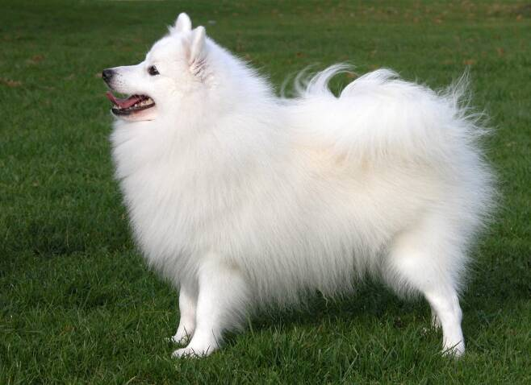

- 이름 : 재패니즈 스피츠
-
특징 : 재패니즈 스피츠는 스피츠라고 하면 가장 먼저 떠오르는 견종이에요. 키(체고)는 30~38cm, 몸무게는 4.5~11kg 정도의
중소형견이에요. 저먼 스피츠 중에서 흰색 모색을 가진 견종들을 일본에서 개량해 생겨난 견종으로 알려져 있답니다. 그래서 저먼 스피츠는 모색이
흰색, 검은색, 주황색 등으로 다양한데, 재패니즈 스피츠의 모색은 흰색뿐이에요.
- 이름 : 저먼 스피츠
-
특징 : 저먼 스피츠는 독일 출신의 스피츠 견종이에요. 크기에 따라 3종류로 나눠집니다. 토이 : 키(체고) 20~30cm, 몸무게 4~5kg
미디엄 : 키(체고) 30~40cm, 몸무게 7~11kg 라지 : 키(체고) 40~50cm, 몸무게 13~23kg 재패니즈 스피츠와의 가장 큰 차이점은 바로 모색인데요.
검은색, 갈색, 크림색, 주황색, 흰색 등의 다양한 모색을 가질 수 있답니다. 또, 재패니즈 스피츠보다 조금 더 예민한 성격을 가지고 있다고 알려져
있어요.